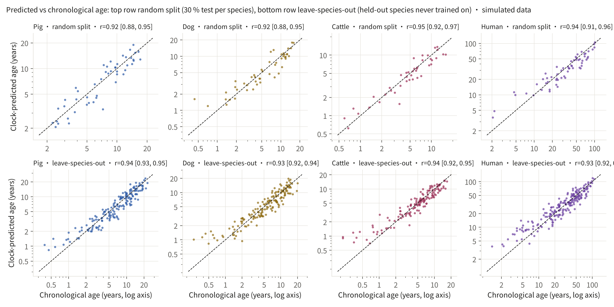
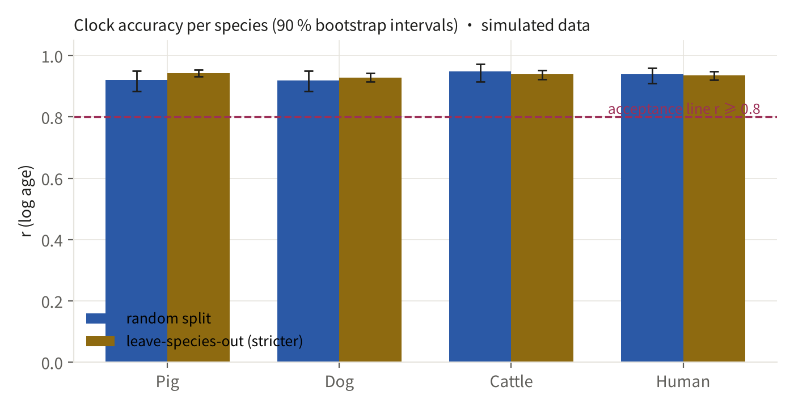
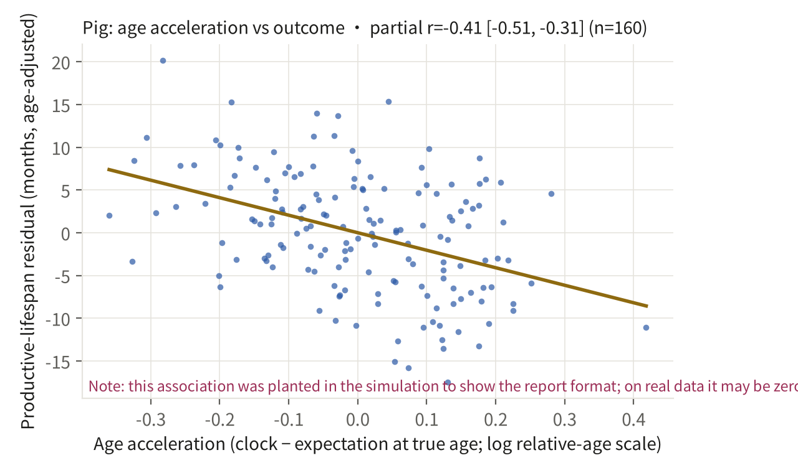
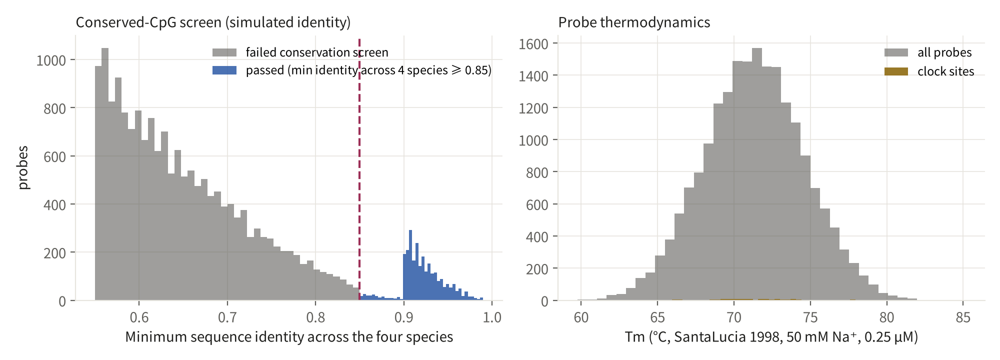

Against PRD v3 §3 Demo 2 and P-D2v3. The claim it serves: the same read-out and the same judge work, unchanged, in a second field beyond breeding — biological age can be read consistently across species. Real GEO data are not yet in hand, so this page runs the complete pipeline on a simulator whose every assumption is declared. Generated 2026-09-28 13:47 UTC, seed 2, simulation config hash e0f028db15c7.
Read-out (methylation array) → QC → conserved-CpG screen (per-species sequence identity) → elastic-net clock on log relative age → random-split and leave-species-out validation → age acceleration vs outcome → probe list. For each step, this version / production version / status:
| Module | This version | Production version | Status |
|---|---|---|---|
| Read-out panel | Simulated array of 20,000 probes, blood only, 2 batches per species | Domestic cross-species methylation array (conserved-CpG panel); GEO pan-mammalian data first | simulated |
| QC | Detection rate and batch record (no missingness in simulation) | Detection p-values, sex check, batch correction (ComBat-type), cell-composition estimates | awaits real data |
| Conserved-CpG screen | Minimum identity across 4 species ≥ 0.85 (simulated identity) | Probe sequences aligned to each genome (minimap2 / BLAST), same threshold | same algorithm, data pending |
| Clock model | Elastic net (l1_ratio 0.5, 5-fold CV for α), target = log relative age | Same (Zou & Hastie 2005; relative-age transform of Lu et al. 2023) | implemented |
| Validation | 70/30 random split per species + leave-one-species-out, 90 % bootstrap CIs | Same; acceptance = leave-species-out r ≥ 0.8 (pig or dog), no tuning to pass | implemented |
| Age acceleration → outcome | Simulated pig 'productive lifespan' label (planted, slope -18.0 months per unit δ) | Culling / productive-lifespan records from the customer ledger; intervention endpoints in dogs and cats | format demo only |
| Probe list | top5k / top20k: clock coefficients, per-species identity, SantaLucia 1998 ΔH/ΔS/Tm | Same; real probe sequences, thermodynamics recomputed under the array maker's conditions | same algorithm, random sequences |


| Species | Samples | Max lifespan (yr, assumed) | Random-split r | Random-split 90 % CI | Leave-species-out r | Leave-species-out 90 % CI | Median abs. error (yr) | ≥ 0.8? |
|---|---|---|---|---|---|---|---|---|
| Pig | 160 | 27.000 | 0.921 | [0.88, 0.95] | 0.943 | [0.93, 0.95] | 1.163 | yes |
| Dog | 160 | 24.000 | 0.918 | [0.88, 0.95] | 0.928 | [0.92, 0.94] | 0.889 | yes |
| Cattle | 140 | 20.000 | 0.949 | [0.92, 0.97] | 0.939 | [0.92, 0.95] | 0.782 | yes |
| Human | 200 | 122.500 | 0.939 | [0.91, 0.96] | 0.935 | [0.92, 0.95] | 5.632 | yes |

Ranking: absolute elastic-net coefficient → conservation pass → minimum identity. Each probe carries per-species sequence identity, GC content and SantaLucia 1998 nearest-neighbour ΔH / ΔS / Tm (50 mM Na⁺, 0.25 µM). Files: probes_top5k.csv, probes_top20k.csv. First 12 rows:
| rank | probe_id | tier | min_identity | Tm_C | clock_coef |
|---|---|---|---|---|---|
| 1 | cg_sim_000283 | clock site (non-zero elastic-net coefficient) | 0.972 | 74.110 | -0.038 |
| 2 | cg_sim_000145 | clock site (non-zero elastic-net coefficient) | 0.922 | 71.690 | -0.036 |
| 3 | cg_sim_000220 | clock site (non-zero elastic-net coefficient) | 0.959 | 69.340 | -0.032 |
| 4 | cg_sim_000266 | clock site (non-zero elastic-net coefficient) | 0.907 | 69.160 | -0.030 |
| 5 | cg_sim_000143 | clock site (non-zero elastic-net coefficient) | 0.953 | 66.170 | -0.030 |
| 6 | cg_sim_000151 | clock site (non-zero elastic-net coefficient) | 0.902 | 77.830 | 0.028 |
| 7 | cg_sim_000093 | clock site (non-zero elastic-net coefficient) | 0.947 | 65.860 | 0.023 |
| 8 | cg_sim_000231 | clock site (non-zero elastic-net coefficient) | 0.972 | 72.730 | -0.022 |
| 9 | cg_sim_000164 | clock site (non-zero elastic-net coefficient) | 0.951 | 70.570 | -0.021 |
| 10 | cg_sim_000042 | clock site (non-zero elastic-net coefficient) | 0.945 | 71.960 | -0.021 |
| 11 | cg_sim_000225 | clock site (non-zero elastic-net coefficient) | 0.940 | 68.390 | -0.020 |
| 12 | cg_sim_000049 | clock site (non-zero elastic-net coefficient) | 0.914 | 74.930 | 0.020 |

bandwidth = samples_per_year / label_latency_years. Age labels are known at sampling (latency ≈ 0), so bandwidth is unbounded; outcome labels (lifespan, culling) arrive after 2.5 years on average, giving 8,000 at an assumed 20,000 samples per year. Both numbers are assumptions.
RUN.json records the seed, the simulation config hash, step durations, r and intervals per species, the acceptance verdict, bandwidth and output hashes.